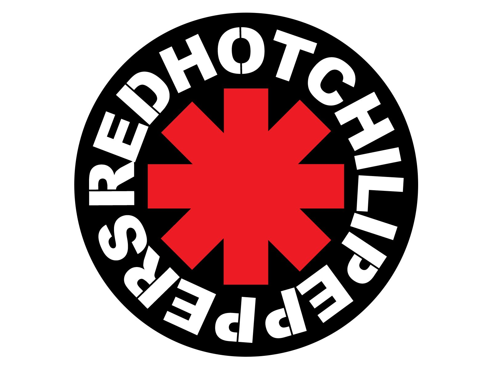
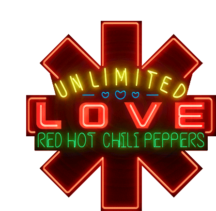

O Logo
O logo da banda, no entanto, não guarda grande mistério. A marca registrada dos Chili Peppers
foi desenhada pelo vocalista Anthony Kiedis, que em 1984 esboçou o asterisco de oito pontas
depois de um pedido da gravadora para que o grupo tivesse alguma identidade visual. O
significado? Segundo Kiedis, nenhum.
Significado e História
Experimentando com o som, o grupo musical nunca mudou sua logomarca. Foi desenhado por
Kiedis em 1984 quando executivos da gravadora pediram algum tipo de gráfico para identificar
visualmente a banda. Isso aconteceu pouco antes do lançamento do álbum de estreia. A
história conta que um funcionário da Enigma Records/EMI instruiu os músicos a completar
materiais promocionais com um emblema. Sem pensar duas vezes, Kiedis desenhou uma
estrela de oito pontas com bordas retangulares no papel e a enviou aos representantes do
estúdio de gravação. Assim nasceu um dos logos mais famosos da cena rock.
O resultado do Kiedis se parece com o símbolo tipográfico asterisco, mas tem uma forma ligeiramente diferente. A estrela na capa do primeiro álbum, que acabou se tornando a principal marca de identificação do Red Hot Chili Peppers, é composta por quatro retângulos que se cruzam no centro. Na verdade, são duas cruzes sobrepostas: reta (em forma de mais) e diagonal (em forma de X). Eles são pintados de vermelho brilhante e estão no anel do nome da banda. A inscrição é difícil de ler devido aos intervalos estreitos entre as palavras. Todas as letras são maiúsculas, pretas, negrito e sem serifa.
Quando o vocalista do Kiedis desenhou o logotipo, ele não colocou nenhum sentido nisso no início. Não era nada mais do que um símbolo abstrato, forçado a existir por um estúdio de gravação. Agora, claro, é de grande importância, porque representa a banda de rock cult e está associada apenas a ela. Aliás, alguns músicos do Red Hot Chili Peppers se tatuaram com uma estrela de oito pontas: Frusciante e Kiedis usam no pulso direito. Muitos torcedores seguiram seu exemplo, então essa é uma espécie de marca de identificação dos membros mais dedicados do fã-clube.
Apesar da falta de sentido inicial do emblema, os músicos tentaram dar uma explicação, e nem sempre foi correta. Em seu livro autobiográfico “Scar Tissue” (2004), Kiedis afirmou que isso não é realmente um asterisco. De acordo com suas palavras, ele pintou uma vista da terra para um anjo que está no buraco do céu.
E os fãs veem o logotipo do Red Hot Chili Peppers como um link para a chamada Star of Affinity. Este símbolo gráfico apareceu em 1970. Foi criado por Michael Moorcock para mostrar as complexidades das escolhas da vida. Uma cruz reta denota os quatro pontos cardeais, como na geografia. As diagonais representam possibilidades adicionais que criam o caos e dificultam a determinação da direção certa. Além disso, os fãs associam o logotipo da banda a uma ilustração do livro “Breakfast of Champions” (1973) do mestre satírico Kurt Vonnegut. O autor colocou um símbolo semelhante no prefácio e também disse que não era um asterisco, mas outra coisa.
A primeira versão faz sentido: talvez o logo do Red Hot Chili Peppers e do Star of Affinity estejam realmente relacionados, pois o grupo toca músicas caóticas, experimentando diferentes gêneros. Mas a conexão com a ilustração no romance “Breakfast of Champions” não foi comprovada, porque Kiedis, ao contrário do baixista, não era um fã dedicado do trabalho de Vonnegut.
O resultado do Kiedis se parece com o símbolo tipográfico asterisco, mas tem uma forma ligeiramente diferente. A estrela na capa do primeiro álbum, que acabou se tornando a principal marca de identificação do Red Hot Chili Peppers, é composta por quatro retângulos que se cruzam no centro. Na verdade, são duas cruzes sobrepostas: reta (em forma de mais) e diagonal (em forma de X). Eles são pintados de vermelho brilhante e estão no anel do nome da banda. A inscrição é difícil de ler devido aos intervalos estreitos entre as palavras. Todas as letras são maiúsculas, pretas, negrito e sem serifa.
Quando o vocalista do Kiedis desenhou o logotipo, ele não colocou nenhum sentido nisso no início. Não era nada mais do que um símbolo abstrato, forçado a existir por um estúdio de gravação. Agora, claro, é de grande importância, porque representa a banda de rock cult e está associada apenas a ela. Aliás, alguns músicos do Red Hot Chili Peppers se tatuaram com uma estrela de oito pontas: Frusciante e Kiedis usam no pulso direito. Muitos torcedores seguiram seu exemplo, então essa é uma espécie de marca de identificação dos membros mais dedicados do fã-clube.
Apesar da falta de sentido inicial do emblema, os músicos tentaram dar uma explicação, e nem sempre foi correta. Em seu livro autobiográfico “Scar Tissue” (2004), Kiedis afirmou que isso não é realmente um asterisco. De acordo com suas palavras, ele pintou uma vista da terra para um anjo que está no buraco do céu.
E os fãs veem o logotipo do Red Hot Chili Peppers como um link para a chamada Star of Affinity. Este símbolo gráfico apareceu em 1970. Foi criado por Michael Moorcock para mostrar as complexidades das escolhas da vida. Uma cruz reta denota os quatro pontos cardeais, como na geografia. As diagonais representam possibilidades adicionais que criam o caos e dificultam a determinação da direção certa. Além disso, os fãs associam o logotipo da banda a uma ilustração do livro “Breakfast of Champions” (1973) do mestre satírico Kurt Vonnegut. O autor colocou um símbolo semelhante no prefácio e também disse que não era um asterisco, mas outra coisa.
A primeira versão faz sentido: talvez o logo do Red Hot Chili Peppers e do Star of Affinity estejam realmente relacionados, pois o grupo toca músicas caóticas, experimentando diferentes gêneros. Mas a conexão com a ilustração no romance “Breakfast of Champions” não foi comprovada, porque Kiedis, ao contrário do baixista, não era um fã dedicado do trabalho de Vonnegut.
Logotipo e Tipografia

A fonte simples e clara Franklin Gothic torna as letras fáceis de ver, mas o arranjo circular das
palavras dificulta a leitura das letras. O tipo de letra escolhido foi desenhado por Morris Fuller
Benton, designer-chefe da American Type Founders. A família de tipos originou-se em 1902 e
expandiu-se nos próximos 65 anos.
O logotipo é construído na combinação de vermelho, branco e preto. O contraste visual das cores é impressionante por si só, mas há também um significado simbólico por trás disso. O vermelho é considerado a cor da paixão e da coragem, enquanto que o preto e o branco enfatizam a alta temperatura emocional da música tocada pelo RHCP.
O logotipo é construído na combinação de vermelho, branco e preto. O contraste visual das cores é impressionante por si só, mas há também um significado simbólico por trás disso. O vermelho é considerado a cor da paixão e da coragem, enquanto que o preto e o branco enfatizam a alta temperatura emocional da música tocada pelo RHCP.
Unlimited Love

Após 6 anos sem o lançamento de um álbum, O RHCP retorna com "Unlimited Love" e um novo estilo para
a capa do álbum, com as letras coloridas e formato em neon.